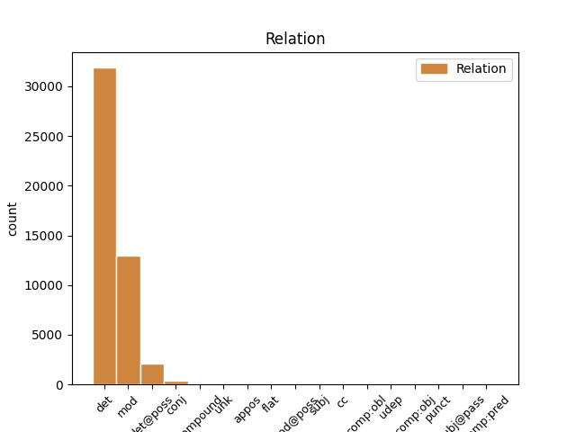
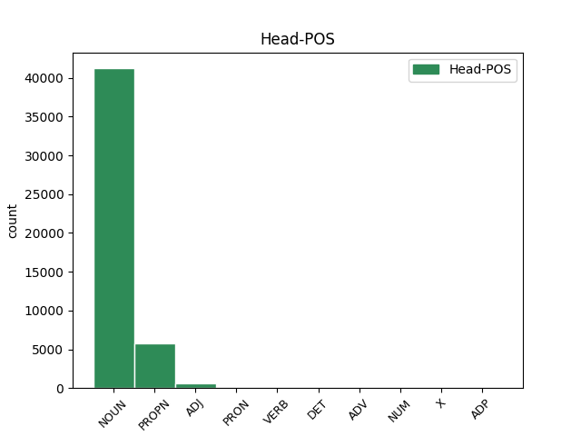
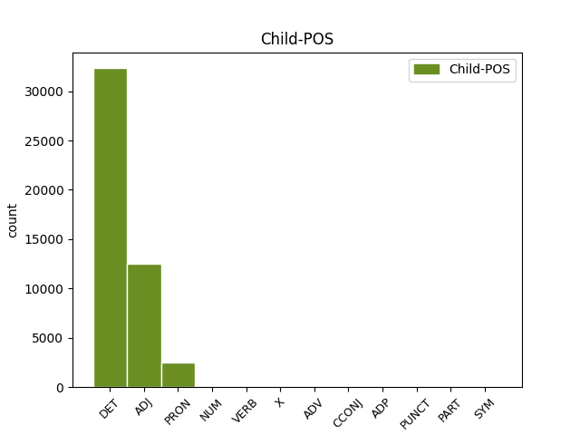

Distribution of features within this leaf



Agreement Rules sorted by frequency.
When the dependent token is None
1 Schon _ _ _ _ 0 _ _ _
2 früh _ _ _ _ 0 _ _ _
3 entwickelte _ _ _ _ 0 _ _ _
4 er _ _ _ _ 0 _ _ _
5 eine _ _ _ _ 0 _ _ _
6 Zuneigung _ _ _ _ 0 _ _ _
7 zu _ _ _ _ 0 _ _ _
8 den _ _ _ _ 0 _ _ _
9 Meteora _ _ _ _ 0 _ _ _
10 - _ _ _ _ 0 _ _ _
11 Klöstern _ _ _ _ 0 _ _ _
12 , _ _ _ _ 0 _ _ _
13 von _ _ _ _ 0 _ _ _
14 denen _ _ _ _ 0 _ _ _
15 einige _ _ _ _ 0 _ _ _
16 unter _ _ _ _ 0 _ _ _
17 der _ _ _ _ 0 _ _ _
18 Herrschaft _ _ _ _ 0 _ _ _
19 seines sein DET PPOSAT Case=Gen|Gender=Masc|Number=Sing|Poss=Yes 20 det@poss _ _
20 Vaters Vater NOUN NN Case=Gen|Gender=Masc|Number=Sing 0 _ _ _
21 entstanden _ _ _ _ 0 _ _ _
22 und _ _ _ _ 0 _ _ _
23 die _ _ _ _ 0 _ _ _
24 auch _ _ _ _ 0 _ _ _
25 er _ _ _ _ 0 _ _ _
26 finanziell _ _ _ _ 0 _ _ _
27 unterstützte _ _ _ _ 0 _ _ _
28 . _ _ _ _ 0 _ _ _
When the dependent token is None
1 1702 _ _ _ _ 0 _ _ _
2 befanden _ _ _ _ 0 _ _ _
3 sich _ _ _ _ 0 _ _ _
4 dort _ _ _ _ 0 _ _ _
5 neben _ _ _ _ 0 _ _ _
6 der _ _ _ _ 0 _ _ _
7 Altstädter _ _ _ _ 0 _ _ _
8 Schule _ _ _ _ 0 _ _ _
9 elf _ _ _ _ 0 _ _ _
10 kleine klein ADJ ADJA Case=Nom|Gender=Neut|Number=Plur 11 mod _ _
11 Häuser Haus NOUN NN Case=Nom|Gender=Neut|Number=Plur 0 _ _ _
12 . _ _ _ _ 0 _ _ _
When the dependent token is None
1 Doch _ _ _ _ 0 _ _ _
2 kann _ _ _ _ 0 _ _ _
3 man _ _ _ _ 0 _ _ _
4 alle _ _ _ _ 0 _ _ _
5 diese dies PRON PDAT Case=Acc|Gender=Fem|Number=Plur|PronType=Dem 6 det _ _
6 Formen Form NOUN NN Case=Acc|Gender=Fem|Number=Plur 0 _ _ _
7 auf _ _ _ _ 0 _ _ _
8 das _ _ _ _ 0 _ _ _
9 Wort _ _ _ _ 0 _ _ _
10 dyaus _ _ _ _ 0 _ _ _
11 zurückführen _ _ _ _ 0 _ _ _
12 , _ _ _ _ 0 _ _ _
13 das _ _ _ _ 0 _ _ _
14 als _ _ _ _ 0 _ _ _
15 " _ _ _ _ 0 _ _ _
16 Erscheinung _ _ _ _ 0 _ _ _
17 " _ _ _ _ 0 _ _ _
18 oder _ _ _ _ 0 _ _ _
19 " _ _ _ _ 0 _ _ _
20 Strahlung _ _ _ _ 0 _ _ _
21 " _ _ _ _ 0 _ _ _
22 aufgefasst _ _ _ _ 0 _ _ _
23 werden _ _ _ _ 0 _ _ _
24 kann _ _ _ _ 0 _ _ _
25 . _ _ _ _ 0 _ _ _
When the dependent token is None
1 Er _ _ _ _ 0 _ _ _
2 machte _ _ _ _ 0 _ _ _
3 aus _ _ _ _ 0 _ _ _
4 der _ _ _ _ 0 _ _ _
5 Abtei _ _ _ _ 0 _ _ _
6 einen _ _ _ _ 0 _ _ _
7 echten _ _ _ _ 0 _ _ _
8 Bischofssitz _ _ _ _ 0 _ _ _
9 , _ _ _ _ 0 _ _ _
10 stockte _ _ _ _ 0 _ _ _
11 das _ _ _ _ 0 _ _ _
12 ganze _ _ _ _ 0 _ _ _
13 Konventsgebäude _ _ _ _ 0 _ _ _
14 mit _ _ _ _ 0 _ _ _
15 Kreuzgang _ _ _ _ 0 _ _ _
16 um _ _ _ _ 0 _ _ _
17 eine ein NUM ART Case=Acc|Gender=Fem|Number=Sing|NumType=Card 18 mod _ _
18 Etage Etage NOUN NN Case=Acc|Gender=Fem|Number=Sing 0 _ _ _
19 auf _ _ _ _ 0 _ _ _
20 und _ _ _ _ 0 _ _ _
21 baute _ _ _ _ 0 _ _ _
22 das _ _ _ _ 0 _ _ _
23 Dormitorium _ _ _ _ 0 _ _ _
24 in _ _ _ _ 0 _ _ _
25 dem _ _ _ _ 0 _ _ _
26 ersten _ _ _ _ 0 _ _ _
27 Stockwerk _ _ _ _ 0 _ _ _
28 des _ _ _ _ 0 _ _ _
29 Ostflügels _ _ _ _ 0 _ _ _
30 in _ _ _ _ 0 _ _ _
31 einen _ _ _ _ 0 _ _ _
32 großzügigen _ _ _ _ 0 _ _ _
33 Korridor _ _ _ _ 0 _ _ _
34 um _ _ _ _ 0 _ _ _
35 , _ _ _ _ 0 _ _ _
36 von _ _ _ _ 0 _ _ _
37 dem _ _ _ _ 0 _ _ _
38 die _ _ _ _ 0 _ _ _
39 Zimmer _ _ _ _ 0 _ _ _
40 mit _ _ _ _ 0 _ _ _
41 Alkoven _ _ _ _ 0 _ _ _
42 und _ _ _ _ 0 _ _ _
43 Oratorien _ _ _ _ 0 _ _ _
44 ( _ _ _ _ 0 _ _ _
45 Gebetsraum _ _ _ _ 0 _ _ _
46 ) _ _ _ _ 0 _ _ _
47 abgehen _ _ _ _ 0 _ _ _
48 , _ _ _ _ 0 _ _ _
49 deren _ _ _ _ 0 _ _ _
50 Türen _ _ _ _ 0 _ _ _
51 von _ _ _ _ 0 _ _ _
52 dekorierten _ _ _ _ 0 _ _ _
53 Trumeaus _ _ _ _ 0 _ _ _
54 getrennt _ _ _ _ 0 _ _ _
55 sind _ _ _ _ 0 _ _ _
56 . _ _ _ _ 0 _ _ _
When the dependent token is None
1 Die _ _ _ _ 0 _ _ _
2 Deponieoberfläche _ _ _ _ 0 _ _ _
3 entwässerte _ _ _ _ 0 _ _ _
4 weitestgehend _ _ _ _ 0 _ _ _
5 in _ _ _ _ 0 _ _ _
6 einen _ _ _ _ 0 _ _ _
7 die _ _ _ _ 0 _ _ _
8 Deponie _ _ _ _ 0 _ _ _
9 umgebenden umgebend VERB ADJA Case=Gen|Gender=Fem|Number=Plur 10 mod _ _
10 Ringgraben Ringgraben NOUN NN Case=Gen|Gender=Fem|Number=Plur 0 _ _ _
11 . _ _ _ _ 0 _ _ _
When the dependent token is None
1 An _ _ _ _ 0 _ _ _
2 dem _ _ _ _ 0 _ _ _
3 Ende _ _ _ _ 0 _ _ _
4 des _ _ _ _ 0 _ _ _
5 Mittelalters _ _ _ _ 0 _ _ _
6 gab _ _ _ _ 0 _ _ _
7 es _ _ _ _ 0 _ _ _
8 nur _ _ _ _ 0 _ _ _
9 noch _ _ _ _ 0 _ _ _
10 leibeigene leibeigen ADV ADJA Case=Acc|Gender=Masc|Number=Plur 12 mod _ _
11 Humfelder _ _ _ _ 0 _ _ _
12 Bauern Bauer NOUN NN Case=Acc|Gender=Masc|Number=Plur 0 _ _ _
13 . _ _ _ _ 0 _ _ _
When the dependent token is None
1 In _ _ _ _ 0 _ _ _
2 dieser _ _ _ _ 0 _ _ _
3 Zeit _ _ _ _ 0 _ _ _
4 war _ _ _ _ 0 _ _ _
5 Campbell _ _ _ _ 0 _ _ _
6 nicht _ _ _ _ 0 _ _ _
7 nur _ _ _ _ 0 _ _ _
8 wichtiger _ _ _ _ 0 _ _ _
9 Teil _ _ _ _ 0 _ _ _
10 von _ _ _ _ 0 _ _ _
11 Dylans _ _ _ _ 0 _ _ _
12 Live _ _ _ _ 0 _ _ _
13 - _ _ _ _ 0 _ _ _
14 Band _ _ _ _ 0 _ _ _
15 , _ _ _ _ 0 _ _ _
16 sondern _ _ _ _ 0 _ _ _
17 auch _ _ _ _ 0 _ _ _
18 Musiker _ _ _ _ 0 _ _ _
19 auf _ _ _ _ 0 _ _ _
20 dem _ _ _ _ 0 _ _ _
21 Studioalbum _ _ _ _ 0 _ _ _
22 " _ _ _ _ 0 _ _ _
23 Love _ _ _ _ 0 _ _ _
24 and _ _ _ _ 0 _ _ _
25 Theft _ _ _ _ 0 _ _ _
26 " _ _ _ _ 0 _ _ _
27 aus _ _ _ _ 0 _ _ _
28 dem _ _ _ _ 0 _ _ _
29 Jahr _ _ _ _ 0 _ _ _
30 2001 _ _ _ _ 0 _ _ _
31 und _ _ _ _ 0 _ _ _
32 dem _ _ _ _ 0 _ _ _
33 Dylan _ _ _ _ 0 _ _ _
34 - _ _ _ _ 0 _ _ _
35 Film _ _ _ _ 0 _ _ _
36 Masked _ _ _ _ 0 _ _ _
37 and and CCONJ NE Case=Dat|Gender=Masc|Number=Sing 38 cc _ _
38 Anonymous Anonymous PROPN NE Case=Dat|Gender=Masc|Number=Sing 0 _ _ _
39 aus _ _ _ _ 0 _ _ _
40 dem _ _ _ _ 0 _ _ _
41 Jahr _ _ _ _ 0 _ _ _
42 2003 _ _ _ _ 0 _ _ _
43 . _ _ _ _ 0 _ _ _
When the dependent token is None
1 Besondere _ _ _ _ 0 _ _ _
2 Berücksichtigung _ _ _ _ 0 _ _ _
3 fanden _ _ _ _ 0 _ _ _
4 die _ _ _ _ 0 _ _ _
5 Arbeiterbewegung _ _ _ _ 0 _ _ _
6 , _ _ _ _ 0 _ _ _
7 die _ _ _ _ 0 _ _ _
8 Geschlechtergeschichte _ _ _ _ 0 _ _ _
9 sowie _ _ _ _ 0 _ _ _
10 die _ _ _ _ 0 _ _ _
11 Wohnungspolitik Wohnungspolitik NOUN NN Case=Acc|Gender=Fem|Number=Sing 0 _ _ _
12 inkl inkl X NE Case=Acc|Gender=Fem|Number=Sing 11 unk _ SpaceAfter=No
13 . _ _ _ _ 0 _ _ _
When the dependent token is None
1 Das _ _ _ _ 0 _ _ _
2 Pro Pro ADP NN Case=Nom|Gender=Neut|Number=Sing 6 compound _ _
3 - _ _ _ _ 0 _ _ _
4 Kopf _ _ _ _ 0 _ _ _
5 - _ _ _ _ 0 _ _ _
6 Einkommen Einkommen NOUN NN Case=Nom|Gender=Neut|Number=Sing 0 _ _ _
7 betrug _ _ _ _ 0 _ _ _
8 23.998 _ _ _ _ 0 _ _ _
9 USD _ _ _ _ 0 _ _ _
10 . _ _ _ _ 0 _ _ _
When the dependent token is None
1 Diese _ _ _ _ 0 _ _ _
2 interdisziplinär _ _ _ _ 0 _ _ _
3 breit _ _ _ _ 0 _ _ _
4 vernetzte _ _ _ _ 0 _ _ _
5 hermeneutische _ _ _ _ 0 _ _ _
6 Spirale _ _ _ _ 0 _ _ _
7 ( _ _ _ _ 0 _ _ _
8 Theologie _ _ _ _ 0 _ _ _
9 → _ _ _ _ 0 _ _ _
10 Exegese _ _ _ _ 0 _ _ _
11 → → PUNCT NE Case=Nom|Gender=Fem|Number=Sing 13 punct _ _
12 exegetische _ _ _ _ 0 _ _ _
13 Theologie Theologie NOUN NN Case=Nom|Gender=Fem|Number=Sing 0 _ _ _
14 ) _ _ _ _ 0 _ _ _
15 lässt _ _ _ _ 0 _ _ _
16 neue _ _ _ _ 0 _ _ _
17 Erkenntnisse _ _ _ _ 0 _ _ _
18 aus _ _ _ _ 0 _ _ _
19 der _ _ _ _ 0 _ _ _
20 Heiligen _ _ _ _ 0 _ _ _
21 Schrift _ _ _ _ 0 _ _ _
22 wachsen _ _ _ _ 0 _ _ _
23 , _ _ _ _ 0 _ _ _
24 welche _ _ _ _ 0 _ _ _
25 die _ _ _ _ 0 _ _ _
26 postscriptuelle _ _ _ _ 0 _ _ _
27 Schriftwerdung _ _ _ _ 0 _ _ _
28 bereichern _ _ _ _ 0 _ _ _
29 . _ _ _ _ 0 _ _ _
When the dependent token is None
1 Clark _ _ _ _ 0 _ _ _
2 ist _ _ _ _ 0 _ _ _
3 damit _ _ _ _ 0 _ _ _
4 der _ _ _ _ 0 _ _ _
5 erste _ _ _ _ 0 _ _ _
6 Preisträger _ _ _ _ 0 _ _ _
7 aus _ _ _ _ 0 _ _ _
8 dem _ _ _ _ 0 _ _ _
9 nicht nicht PART ADJA Case=Dat|Gender=Neut|Number=Sing|Polarity=Neg 11 mod _ _
10 - _ _ _ _ 0 _ _ _
11 deutschsprachigen deutschsprachig ADJ ADJA Case=Dat|Gender=Neut|Number=Sing 0 _ _ _
12 Ausland _ _ _ _ 0 _ _ _
13 . _ _ _ _ 0 _ _ _
Disagree Examples:
1 Ob _ _ _ _ 0 _ _ _
2 bei _ _ _ _ 0 _ _ _
3 der _ _ _ _ 0 _ _ _
4 Terminvergabe _ _ _ _ 0 _ _ _
5 , _ _ _ _ 0 _ _ _
6 den _ _ _ _ 0 _ _ _
7 Behandlungsräumen _ _ _ _ 0 _ _ _
8 oder _ _ _ _ 0 _ _ _
9 den der DET ART Case=Dat|Definite=Def|Gender=Neut|Number=Plur|PronType=Art 12 det _ _
10 individuell _ _ _ _ 0 _ _ _
11 zugeschnittenen _ _ _ _ 0 _ _ _
12 Trainingsplänen Trainingsplan NOUN NN Case=Dat|Gender=Masc|Number=Plur 0 _ _ _
13 sind _ _ _ _ 0 _ _ _
14 alle _ _ _ _ 0 _ _ _
15 Mitarbeiter _ _ _ _ 0 _ _ _
16 äußerst _ _ _ _ 0 _ _ _
17 kompetent _ _ _ _ 0 _ _ _
18 und _ _ _ _ 0 _ _ _
19 flexibel _ _ _ _ 0 _ _ _
20 . _ _ _ _ 0 _ _ _
1 Das der DET ART Case=Nom|Definite=Def|Gender=Neut|Number=Sing|PronType=Art 3 det _ _
2 einzig _ _ _ _ 0 _ _ _
3 positive positiv NOUN ADJA Case=Acc|Gender=Masc|Number=Plur 0 _ _ _
4 was _ _ _ _ 0 _ _ _
5 man _ _ _ _ 0 _ _ _
6 sagen _ _ _ _ 0 _ _ _
7 kann _ _ _ _ 0 _ _ _
8 war _ _ _ _ 0 _ _ _
9 das _ _ _ _ 0 _ _ _
10 sie _ _ _ _ 0 _ _ _
11 geschmeckt _ _ _ _ 0 _ _ _
12 hat _ _ _ _ 0 _ _ _
13 , _ _ _ _ 0 _ _ _
14 aber _ _ _ _ 0 _ _ _
15 rein _ _ _ _ 0 _ _ _
16 optisch _ _ _ _ 0 _ _ _
17 hätte _ _ _ _ 0 _ _ _
18 es _ _ _ _ 0 _ _ _
19 meine _ _ _ _ 0 _ _ _
20 kleine _ _ _ _ 0 _ _ _
21 Schwester _ _ _ _ 0 _ _ _
22 wirklich _ _ _ _ 0 _ _ _
23 besser _ _ _ _ 0 _ _ _
24 gemacht _ _ _ _ 0 _ _ _
25 ! _ _ _ _ 0 _ _ _
1 Für _ _ _ _ 0 _ _ _
2 eine ein DET ART Case=Acc|Definite=Ind|Gender=Fem|Number=Sing|PronType=Art 6 det _ _
3 300 _ _ _ _ 0 _ _ _
4 Euro _ _ _ _ 0 _ _ _
5 teuere _ _ _ _ 0 _ _ _
6 Torte Torte NOUN NN Case=Nom|Gender=Masc|Number=Plur 0 _ _ _
7 von _ _ _ _ 0 _ _ _
8 einem _ _ _ _ 0 _ _ _
9 angeblichen _ _ _ _ 0 _ _ _
10 Meisterkonditor _ _ _ _ 0 _ _ _
11 war _ _ _ _ 0 _ _ _
12 das _ _ _ _ 0 _ _ _
13 einfach _ _ _ _ 0 _ _ _
14 nur _ _ _ _ 0 _ _ _
15 furchtbar _ _ _ _ 0 _ _ _
16 -- _ _ _ _ 0 _ _ _
17 die _ _ _ _ 0 _ _ _
18 gelieferte _ _ _ _ 0 _ _ _
19 Torte _ _ _ _ 0 _ _ _
20 hatte _ _ _ _ 0 _ _ _
21 keinerlei _ _ _ _ 0 _ _ _
22 Ähnlichkeit _ _ _ _ 0 _ _ _
23 mit _ _ _ _ 0 _ _ _
24 dem _ _ _ _ 0 _ _ _
25 Bild _ _ _ _ 0 _ _ _
26 der _ _ _ _ 0 _ _ _
27 Torte _ _ _ _ 0 _ _ _
28 die _ _ _ _ 0 _ _ _
29 wir _ _ _ _ 0 _ _ _
30 haben _ _ _ _ 0 _ _ _
31 wollten _ _ _ _ 0 _ _ _
32 ( _ _ _ _ 0 _ _ _
33 welches _ _ _ _ 0 _ _ _
34 wir _ _ _ _ 0 _ _ _
35 ihm _ _ _ _ 0 _ _ _
36 ja _ _ _ _ 0 _ _ _
37 überlassen _ _ _ _ 0 _ _ _
38 hatten _ _ _ _ 0 _ _ _
39 ) _ _ _ _ 0 _ _ _
40 . _ _ _ _ 0 _ _ _
1 Wir _ _ _ _ 0 _ _ _
2 sind _ _ _ _ 0 _ _ _
3 seit _ _ _ _ 0 _ _ _
4 vielen _ _ _ _ 0 _ _ _
5 Jahren _ _ _ _ 0 _ _ _
6 Mandanten _ _ _ _ 0 _ _ _
7 der der DET ART Case=Gen|Definite=Def|Gender=Masc|Number=Plur|PronType=Art 8 det _ _
8 Rechtsanwälte Rechtsanwalt NOUN NN Case=Gen|Gender=Fem|Number=Sing 0 _ _ _
9 Ruland _ _ _ _ 0 _ _ _
10 und _ _ _ _ 0 _ _ _
11 wurden _ _ _ _ 0 _ _ _
12 immer _ _ _ _ 0 _ _ _
13 optimal _ _ _ _ 0 _ _ _
14 in _ _ _ _ 0 _ _ _
15 bei _ _ _ _ 0 _ _ _
16 unseren _ _ _ _ 0 _ _ _
17 Probleme _ _ _ _ 0 _ _ _
18 und _ _ _ _ 0 _ _ _
19 Anliegen _ _ _ _ 0 _ _ _
20 unterstützt _ _ _ _ 0 _ _ _
21 . _ _ _ _ 0 _ _ _
1 Die _ _ _ _ 0 _ _ _
2 Mitarbeiter _ _ _ _ 0 _ _ _
3 waren _ _ _ _ 0 _ _ _
4 sehr _ _ _ _ 0 _ _ _
5 freundlich _ _ _ _ 0 _ _ _
6 und _ _ _ _ 0 _ _ _
7 es _ _ _ _ 0 _ _ _
8 herrschte _ _ _ _ 0 _ _ _
9 eine _ _ _ _ 0 _ _ _
10 nette _ _ _ _ 0 _ _ _
11 Stimmung _ _ _ _ 0 _ _ _
12 in _ _ _ _ 0 _ _ _
13 dem _ _ _ _ 0 _ _ _
14 ganzen ganz ADJ ADJA Case=Dat|Gender=Masc|Number=Sing 15 mod _ _
15 Salon Salon NOUN NN Case=Dat|Gender=Neut|Number=Sing 0 _ _ _
16 . _ _ _ _ 0 _ _ _